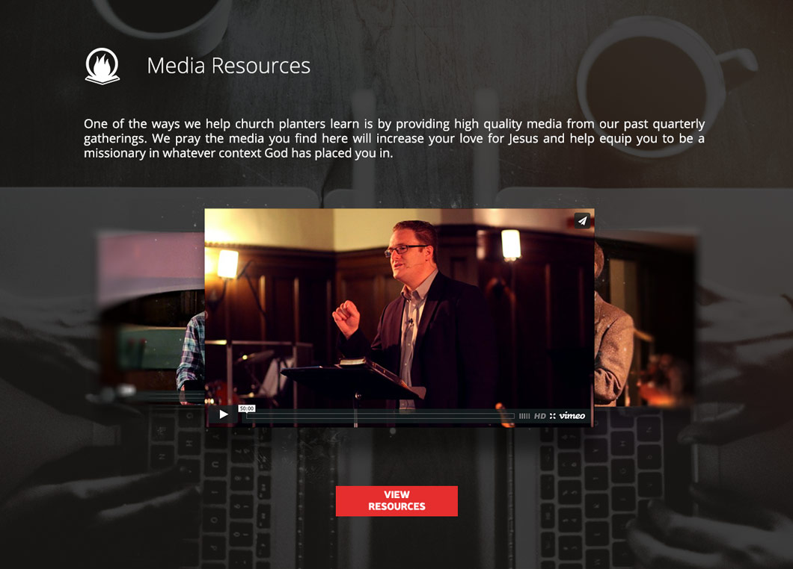

PlantMidwest is a new St. Louis religious organization that meets quarterly in several cities throughout the midwest. Through LaunchBot Creative I was able to design their first website.
The site needed to describe the organization, make it very easy to sign up for their quarterly events, and catalog media from each of those events for later viewing. We worked with the client for a few months altering page designs and functionality, and eventually landed on a final product that is one of the best sites that we delivered. The home page above and the image clips below are a sample of the muted and modern feel of the final design.
